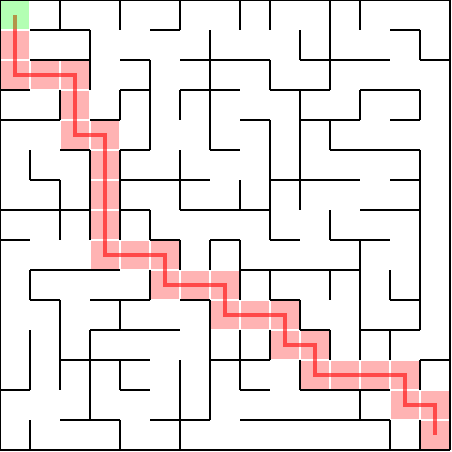
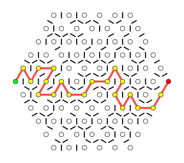

These mazes demonstrate the corrected boundary wall implementation. The perimeter is completely solid except for openings at the entrance (green) and exit (red).
Entrance at top-left (0,0), exit at bottom-right (14,14). Notice the solid perimeter walls with openings only at entrance and exit.
Entrance on the left edge, exit on the right edge. The hexagonal perimeter is solid except at the designated openings.
